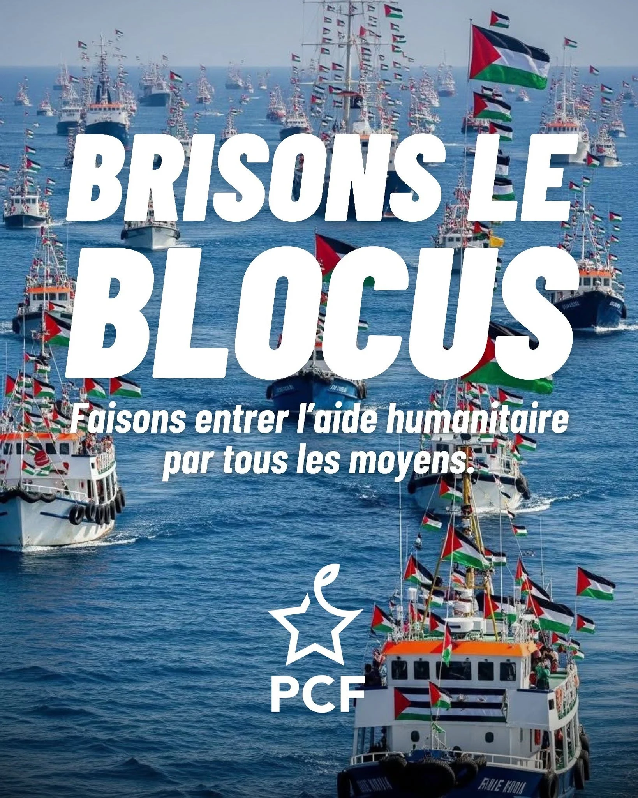

Publication relayée par le PCF 79
Le PCF appelle à agir contre le blocus de Gaza
Date de mise à jour indiquée par Facebook · 8 septembre 2025
Texte de la publication · PCF national
Gaza étouffe.
Le blocus est une arme de guerre, une condamnation à mort pour 2,3 millions de Palestinien·nes. L’urgence n’est plus à la dénonciation, mais à l’action.
Il faut briser le siège par tous les moyens — et maintenant.
Nous soutenons la #GlobalSumudFlotilla, c'est un cri de colère légitime, l’écho d’une indignation mondiale face au génocide en cours.
Mais les symboles ne suffisent plus. Il faut une pression internationale concrète, à la hauteur de l’horreur et de l’urgence humanitaire.

Sources
PCF national · publication relayée par le PCF 79 · bibliothèque Facebook · AR-0002-FB-01023
À lire aussi · Flottille pour Gaza. Nous avons dénoncé l’arraisonnement des bateaux